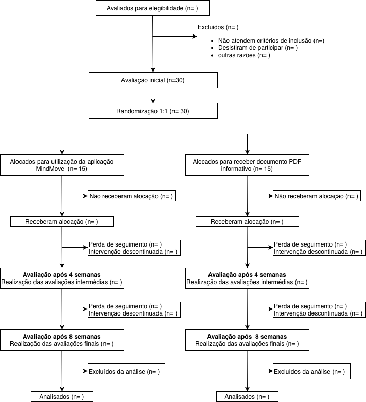
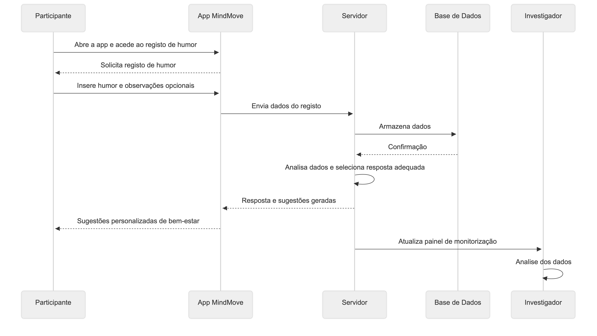
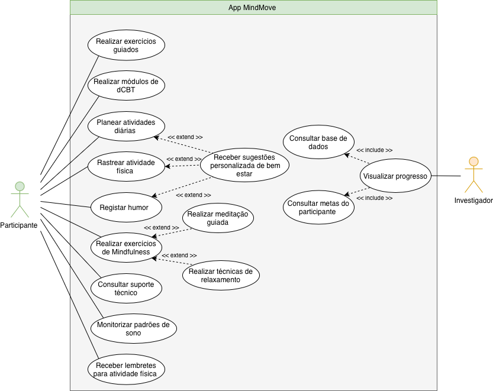

Protocolo de Ensaio Clínico
Título do Estudo
Eficácia da Aplicação Móvel “MindMove” baseada em Terapia Cognitivo-Comportamental Digital versus Lista de Espera com Material Educativo na Redução de Sintomas Depressivos, Ansiedade e Melhoria da Qualidade do Sono em Estudantes Universitários com Sintomatologia Ligeira a Moderada: Um Ensaio Clínico Randomizado, Controlado e Paralelo
Título Abreviado
MindMove: Eficácia dCBT em Estudantes Universitários
Autores e Afiliações
Investigadores Principais:
Maria João Marques Roso, Faculdade de Medicina da Universidade do Porto
Inês Mota Assunção, Faculdade de Medicina da Universidade do Porto
Maria João Lopes Roldão, Faculdade de Medicina da Universidade do Porto
Inês Duque Formoso, Faculdade de Medicina da Universidade do Porto
Instituição: Faculdade de Medicina da Universidade do Porto
Contacto: Email: up202507727@up.pt
Identificação do Ensaio
Tipo de estudo: Ensaio clínico randomizado, controlado, paralelo
Data de início prevista: 06/03/26
Data de conclusão prevista: 18/04/26
1. Introdução
1.1 Racional
A saúde mental dos estudantes universitários constitui um desafio de saúde pública de magnitude crescente. A transição para a vida académica, caracterizada por pressões académicas, financeiras e sociais, expõe esta população a um stress acumulado que resulta numa prevalência elevada de sintomatologia depressiva ligeira a moderada. Este período representa uma fase de vulnerabilidade crítica onde, caso não seja intervencionado precocemente, o sofrimento emocional pode comprometer o rendimento académico e progredir para quadros de depressão maior. [1]
Atualmente, o acesso aos cuidados convencionais de saúde mental enfrenta limitações estruturais severas. Nos contextos universitários, os serviços de psicologia debatem-se com listas de espera extensas e horários rígidos que dificultam a procura de ajuda. Adicionalmente, o estigma associado ao apoio presencial atua como uma barreira psicológica, levando a que muitos estudantes adiem a procura de auxílio até que os sintomas se tornem incapacitantes, perdendo-se a janela de oportunidade para uma intervenção mais eficaz. [2]
A evidência científica recente tem demonstrado que as intervenções digitais, particularmente a terapia cognitivo-comportamental digital (dCBT), são ferramentas eficazes, escaláveis e desestigmatizantes para a gestão de sintomas depressivos e ansiosos. Estas soluções permitem alcançar uma população vasta que, de outra forma, permaneceria sem suporte profissional. [3]
Este estudo pretende preencher uma lacuna na literatura ao avaliar o impacto de uma solução integrada, a aplicação “MindMove”. Ao combinar módulos de dCBT com ferramentas de ativação comportamental, diário de humor, monitorização de sono e sugestões de atividade física, o “MindMove” propõe uma abordagem holística e personalizada, desenhada especificamente para os hábitos e necessidades da população estudantil.
A escolha da lista de espera com material educativo como comparador é eticamente justificada. Este desenho assegura que o grupo controlo não é privado de suporte informativo, mantendo-se o acesso a recursos básicos de saúde mental, e garante, simultaneamente, que todos os participantes beneficiem do acesso à aplicação após a conclusão do ensaio.
A relevância clínica deste ensaio reside no seu potencial de validação como estratégia de prevenção secundária. Espera-se que a intervenção reduza a carga de sintomas depressivos, promovendo a autonomia do estudante na gestão do seu bem-estar e oferecendo às instituições de ensino superior uma ferramenta de baixo custo e alta eficácia para a promoção da saúde mental comunitária.
1.2 Objetivos
Objetivo Primário
Avaliar a eficácia da aplicação móvel MindMove na redução dos sintomas depressivos em estudantes universitários com sintomatologia ligeira a moderada, medida através da variação na pontuação da escala PHQ-9 após 8 semanas de intervenção, em comparação com um grupo de controlo em lista de espera.
Objetivos Secundários
Os objetivos secundários deste estudo são:
Comparar a redução dos níveis de ansiedade entre os dois grupos, avaliada através da escala GAD-7. [6]
Analisar a melhoria na qualidade do sono dos participantes, utilizando o índice PSQI (Pittsburgh Sleep Quality Index). [4]
Avaliar o impacto da intervenção no aumento dos níveis de atividade física semanal dos estudantes.
Determinar o nível de engagement dos utilizadores com as funcionalidades da aplicação, incluindo o tempo de uso e a taxa de conclusão dos módulos de dCBT.
Monitorizar a satisfação dos participantes com a intervenção e a taxa de abandono (dropout) ao longo das 8 semanas.
2. Métodos
2.1 Desenho do Estudo
Este é um ensaio clínico randomizado, controlado, de grupos paralelos.
Características do desenho:
Randomização 1:1 (intervenção : controlo)
Duração: 8 semanas
Setting: 1 serviço de psicologia universitário
Fase: Estudo piloto (pré-teste)
Tamanho da amostra: 30 participantes (15 por braço)
Timeline:
Tabela 1: Cronograma do ensaio clínico MindMove
| Fase do Estudo | Duração | Descrição das Atividades |
|---|---|---|
| Recrutamento | 4 semanas | Divulgação nas faculdades, triagem de elegebilidade e assinatura do consentimento informado |
| Baseline | 1 semana | Avaliação inicial (Questionários GAD-7, PSQI) e randomização |
| Intervenção | 8 semanas | Exercício aeróbico supervisionado (Grupo E) vs. Controlo sedentário (Grupo C) |
| Follow-up | 8 semanas | Avaliações intermédias (4ªsem) e avaliação final (8ªsem) para medir eficácia |
O diagrama CONSORT será utilizado como ferramenta de reporte deste estudo, sendo preenchido na sua totalidade após a conclusão do ensaio clínico (Figura 1).

Figura 1: Fluxograma CONSORT do ensaio clínico, ilustrando o processo de recrut)amento, elegibilidade, randomização, follow-up e análise dos participantes ao longo do estudo.
2.2 População do Estudo
A população-alvo deste ensaio clínico é constituída por estudantes universitários com idades compreendidas entre os 18 e os 30 anos, que se encontram matriculados em cursos de licenciatura, mestrado ou doutoramento. Este grupo demográfico é selecionado por se encontrar numa fase de transição desenvolvimental com elevada prevalência de stress psicológico, sendo ideal para a implementação de estratégias de prevenção secundária em saúde mental.
2.2.1 Critérios de Inclusão
Serão elegíveis para participação neste estudo indivíduos que cumpram todos os seguintes critérios:
Estudantes universitários entre 18 e 30 anos.
Sintomas depressivos ligeiros a moderados.
PHQ-9 (Patient Health Questionnaire-9) score entre 5 e 14.
Possuir e saber utilizar um smartphone com sistema operativo Android (versão 8.0 ou superior) ou iOS (versão 13.0 ou superior), com acesso funcional à internet.
Demonstrar capacidade de leitura e compreensão da língua portuguesa, necessária para interagir com os módulos de dCBT e os conteúdos educativos.
Ter capacidade cognitiva para compreender os objetivos do estudo e fornecer o Consentimento Informado, Livre e Esclarecido.
Declarar disponibilidade para participar no protocolo de intervenção e avaliação durante o período total de 8 semanas, bem como para as sessões de acompanhamento previstas.
2.2.2 Critérios de Exclusão
Serão excluídos do estudo indivíduos que apresentem qualquer dos seguintes critérios:
Diagnóstico prévio de perturbação bipolar, esquizofrenia ou outras psicoses, ou intenção suicida ativa (identificada pelo item 9 do PHQ-9 ou avaliação clínica).
Estar a participar noutro ensaio clínico ou ter alterado a medicação psicotrópica (antidepressivos/ansiolíticos) ou iniciado psicoterapia nas 4 semanas anteriores ao recrutamento.
Apresentar condições físicas ou ortopédicas severas que impeçam a realização dos exercícios de ativação comportamental e atividade física sugeridos pela aplicação.
Mulheres em período de gestação ou lactação, devido às alterações hormonais e de sono que podem confundir a avaliação dos resultados de humor e fadiga.
Sem acesso a smartphone ou internet.
Qualquer outra condição clínica ou social que, na opinião do investigador principal, possa comprometer a segurança do participante ou a integridade dos dados recolhidos.
2.2.3 Processo de Recrutamento
Os participantes serão identificados e recrutados através de uma estratégia que combina o contexto clínico e digital. Primeiro, será estabelecida uma colaboração com Unidades de Saúde Familiar (USF), onde os médicos de Medicina Geral e Familiar referenciarão doentes que apresentem queixas de baixo humor ou ansiedade durante consultas de rotina. Paralelamente, serão publicados anúncios em redes sociais institucionais e fóruns de saúde mental, direcionando os interessados para uma página de screening online. Após o preenchimento dos questionários iniciais (PHQ-9), os indivíduos elegíveis serão contactados para uma breve entrevista de validação diagnóstica por videoconferência, onde será formalizado o consentimento informado antes da randomização.
2.3 Intervenções
2.3.1 Grupo de Intervenção
Os participantes randomizados para o grupo de intervenção receberão:
Aplicação MindMove:
Esta app constitui uma solução digital de saúde concebida para a autogestão da sintomatologia depressiva.
Funcionalidades principais:
- Módulos de dCBT e Ativação Comportamental:
A aplicação disponibiliza unidades estruturadas de Terapia Cognitivo-Comportamental digital (dCBT) que abordam a reestruturação cognitiva.
O utilizador interage completando exercícios guiados e planeando atividades diárias de ativação comportamental.
Espera-se que o participante complete pelo menos um sub-módulo de 15 minutos, três vezes por semana.
- Diário de Humor e Monitorização de Sono:
Interface diária para registo de estado emocional (mood tracking) e métricas de sono (horas totais e percepção de qualidade).
A interação é feita através de escalas visuais analógicas.
A frequência de uso esperada é de uma utilização diária, preferencialmente ao final do dia.

Figura 2: Diagrama de atividade que representa o percurso do participante ao longo do ensaio clínico, desde o recrutamento e avaliação de elegibilidade até à randomização, follow-up e análise final
- Mindfulness e Sugestões Personalizadas:
Biblioteca de áudios de meditação guiada e técnicas de relaxamento.
Com base no humor registado e nos padrões de atividade física detetados pelos sensores do smartphone, a app gera sugestões personalizadas de bem-estar (ex: “Notámos que o seu humor baixou; experimente esta técnica de respiração de 5 minutos”).
Instalação e Onboarding:
Após a randomização, os participantes recebem um e-mail com um código de acesso único e um link para download (App Store ou Google Play). No primeiro acesso, a app corre um tutorial interativo de 5 minutos que explica a navegação, a configuração de lembretes e a privacidade dos dados.
Suporte técnico:
O suporte será garantido através de um canal de chat dentro da própria aplicação e um endereço de e-mail dedicado à equipa de investigação, com tempo de resposta garantido de 24 horas úteis.

Figura 3: Diagrama de sequência com o processo de registo de humor na apli cação MindMove, desde a introdução dos dados pelo utilizador até ao seu ar mazenamento e processamento
Cuidado concomitante:
Os participantes mantêm o seu cuidado médico habitual, incluindo consultas de rotina com o seu médico assistente e qualquer medicação crónica não psicotrópica previamente estabelecida.

Figura 4: Diagrama de casos de uso da aplicação MindMove, com as principais funcionalidades disponibilizadas ao utilizador.
2.3.2 Grupo Controlo
Os participantes deste grupo não terão acesso à aplicação durante as 8 semanas do estudo. Receberão, no momento da inclusão, um documento em formato PDF via e-mail contendo brochuras informativas sobre higiene do sono, importância da atividade física na saúde mental e uma lista de recursos de emergência e linhas de apoio psicológico disponíveis em Portugal.
Tipo de controlo: Lista de espera com material educativo estático.
Justificação do comparador:
Este comparador representa o standard of care atual em cuidados primários, onde o tempo de espera para intervenções psicológicas especializadas é elevado, sendo o material educativo a única ferramenta de suporte imediato disponível em muitos contextos. O design de lista de espera garante que, por razões éticas, todos os participantes tenham acesso à tecnologia benéfica após o período de avaliação principal.
2.3.3 Critérios de Descontinuação
Participantes serão retirados do estudo se:
Retirarem voluntariamente o seu consentimento em qualquer fase do processo.
Desenvolverem agravamento clínico severo, nomeadamente se surgir intenção suicida ou necessidade de internamento psiquiátrico imediato.
Ocorrer uma violação grave do protocolo, como a partilha das credenciais de acesso à aplicação com terceiros ou início de nova terapia psicofarmacológica durante o estudo.
 Figura 5: Diagrama de atividade que representa o percurso do participante ao longo do ensaio clínico, desde o recrutamento e avaliação de elegibilidade até à randomização, follow-up e análise final.
Figura 5: Diagrama de atividade que representa o percurso do participante ao longo do ensaio clínico, desde o recrutamento e avaliação de elegibilidade até à randomização, follow-up e análise final.
3. Avaliações e Outcomes
3.1 Outcome Primário
Pontuação total na escala PHQ-9 (Patient Health Questionnaire-9).
- Instrumento: PHQ-9, um instrumento de autorrelato validado, composto por 9 itens que avaliam a severidade dos sintomas depressivos nos últimos 14 dias, baseado nos critérios do DSM-5 (Kroenke et al., 2001).
- Momento de avaliação: Avaliação realizada no momento baseline (semana 0, pré-randomização) e no final da intervenção (semana 8).
- Definição de sucesso: Redução estatisticamente significativa na média da pontuação total do PHQ-9 no grupo de intervenção (MindMove) em comparação com o grupo de controlo (lista de espera) às 8 semanas, refletindo uma diminuição na severidade da sintomatologia depressiva dos participantes.
3.2 Outcomes Secundários
- Redução dos níveis de ansiedade: Avaliada através da escala Generalized Anxiety Disorder-7 (GAD-7) nas semanas 0, 4 e 8, permitindo aferir a co-ocorrência de melhorias nos sintomas ansiosos.
- Melhoria na qualidade do sono: Medida através do Pittsburgh Sleep Quality Index (PSQI) às 8 semanas, para verificar se os módulos de higiene do sono da app resultam em benefícios clinicamente observáveis.
- Aumento dos níveis de atividade física: Quantificado em minutos de atividade física moderada a vigorosa por semana (através de autorrelato), para avaliar o impacto dos lembretes e incentivos da app no estilo de vida dos estudantes.
- Nível de adesão e engagement: Monitorizado através de métricas de utilização da app (ex: frequência de acesso semanal, tempo de uso diário e número de módulos de dCBT e técnicas de mindfulness completados) durante as 8 semanas.
- Satisfação e aceitabilidade: Avaliadas ao final das 8 semanas através de um questionário de satisfação (ex: Client Satisfaction Questionnaire - CSQ-8), para compreender a utilidade percebida e a facilidade de uso da MindMove na rotina académica.
4. Análise Estatística
A análise dos dados será realizada utilizando o software R. O nível de significância estatística será fixado em \(\alpha = 0,05\) para todos os testes. Para comparar as diferenças nas médias do PHQ-9 entre o grupo de intervenção e o grupo de controlo, será utilizado o teste t de Student para amostras independentes, cuja estatística é calculada pela seguinte equação:
\[t = \frac{\bar{X}_1 - \bar{X}_2}{\sqrt{\frac{s_1^2}{n_1} + \frac{s_2^2}{n_2}}}\]
Onde: * \(\bar{X}_1\) e \(\bar{X}_2\) são as médias das pontuações PHQ-9 de cada grupo; * \(s_1^2\) e \(s_2^2\) são as respetivas variâncias; * \(n_1\) e \(n_2\) são os tamanhos das amostras de cada braço do estudo.
A análise principal do outcome primário será conduzida segundo o princípio de Intenção de Tratar (Intention-to-Treat – ITT) (McCoy, 2017). A análise dos dados será realizada utilizando o software R. O nível de significância estatística será fixado em \(\alpha = 0,05\) para todos os testes. Para minimizar o viés de exclusão, todos os 30 participantes randomizados serão incluídos na análise final, independentemente da sua adesão à aplicação MindMove. Caso haja ocorrência de desistências (dropouts), será utilizado o método de Imputação Múltipla para preencher os valores em falta nos questionários PHQ-9, GAD-7 e PSQI.
A análise principal do outcome primário (variação do score PHQ-9) será conduzida segundo o princípio de Intenção de Tratar (Intention-to-Treat – ITT). Para comparar as diferenças nas médias do PHQ-9 entre o grupo de intervenção e o grupo de controlo no final das 8 semanas, será utilizado um teste t de Student para amostras independentes (ou o teste não paramétrico de Mann-Whitney, caso os dados não apresentem distribuição normal). Os dados em falta (missing data) resultantes de abandonos serão tratados através de métodos de imputação apropriados.
Análise dos Outcomes Secundários
Para a ansiedade (GAD-7) e qualidade do sono (PSQI), utilizaremos uma ANOVA de Medidas Repetidas para avaliar a evolução dos sintomas nos três momentos de medição (0, 4 e 8 semanas). A adesão (engagement) será analisada de forma descritiva através da média e desvio-padrão do número de acessos semanais à aplicação. A taxa de eventos adversos (ex: agravamento severo de sintomas) será comparada entre grupos através do Teste Exato de Fisher.
5. Ética e Disseminação
5.1 Aprovação Ética
O presente protocolo de investigação foi desenhado em estrita conformidade com a Declaração de Helsínquia e com as diretrizes de Boas Práticas Clínicas (GCP). [7] O estudo será submetido para apreciação e aprovação pela Comissão de Ética da Faculdade de Medicina da Universidade do Porto (CEFMUP) antes do início de qualquer procedimento de recrutamento. Quaisquer alterações substanciais ao protocolo serão formalmente comunicadas e submetidas a nova aprovação ética.
5.2 Consentimento Informado
A obtenção do Consentimento Informado, Livre e Esclarecido (CILE) será realizada de forma digital durante a fase de screening. Os potenciais participantes receberão um documento detalhado contendo os objetivos do estudo, os procedimentos envolvidos, os potenciais riscos e benefícios, e a garantia de que a participação é totalmente voluntária. Sendo a população composta por estudantes universitários, será explicitamente clarificado que a recusa em participar ou a desistência do estudo em qualquer fase não acarretará qualquer penalização académica ou perda de acesso a cuidados de saúde habituais. O consentimento formal será registado através de uma assinatura digital segura antes da randomização.
5.3 Confidencialidade e Proteção de Dados
O tratamento de dados pessoais e clínicos cumprirá rigorosamente o Regulamento Geral sobre a Proteção de Dados (RGPD). Todos os dados recolhidos através da aplicação móvel MindMove ou de questionários online serão pseudonimizados, sendo atribuído um código alfanumérico único a cada participante. A chave de identificação que liga os códigos aos dados pessoais será guardada de forma encriptada num servidor seguro da instituição, com acesso restrito aos investigadores principais. Os dados gerados pela interação com a aplicação serão armazenados em servidores cloud com certificação de segurança na área da saúde e não serão partilhados com terceiros para fins comerciais.
5.4 Política de Disseminação
Os resultados deste ensaio clínico, quer sejam positivos, negativos ou inconclusivos, serão submetidos para publicação em revistas científicas com revisão por pares na área da saúde mental digital e psiquiatria. Os dados serão apresentados de forma agregada, garantindo o total anonimato dos participantes. Adicionalmente, os resultados serão partilhados em conferências científicas da especialidade. Após a conclusão e análise dos dados, será enviado um resumo em linguagem acessível a todos os participantes do estudo, e a intervenção MindMove será disponibilizada gratuitamente aos estudantes que integraram o grupo de controlo. ## 6. Referências Bibliográficas
6.1 Prompt usado na IA
Para a elaboração e estruturação deste protocolo segundo a norma SPIRIT, utilizou-se o assistente de IA Gemini (Google). A interação seguiu as diretrizes de transparência sugeridas, utilizando os seguintes comandos:
Gemini: Estou a escrever o racional de um protocolo SPIRIT para um ensaio clínico randomizado. Cenário: App MindMove com as seguintes funcionalidades: Módulos de dCBT (digital Cognitive Behavioral Therapy), Exercícios de ativação comportamental, Diário de humor (mood tracking), Lembretes para atividade física, Técnicas de mindfulness guiadas, Monitorização de padrões de sono, Sugestões personalizadas baseadas em humor. Comparador: Lista de espera + material educativo estático: Acesso a brochuras sobre saúde mental, Lista de recursos disponíveis, SEM intervenção activa durante estudo, Oferta de acesso à app após conclusão do estudo. Outcome primário: PHQ-9 score às 8 semanas. Secundários: GAD-7 (ansiedade), Nível de atividade física (minutos/semana), Qualidade do sono (PSQI - Pittsburgh Sleep Quality Index), Satisfação com intervenção, Engagement com app (tempo de uso, módulos completados), Taxa de dropout. Escreve (…) Usar linguagem científica formal. Não usar marcadores de lista — texto corrido.
6.2 Referências
- Ibrahim, A.K., et al., A systematic review of studies of depression prevalence in university students. J Psychiatr Res, 2013. 47(3): p. 391–400.
- Gulliver, A., K.M. Griffiths, and H. Christensen, Perceived barriers and facilitators to mental health help-seeking in young people: a systematic review. BMC Psychiatry, 2010. 10: p. 113.
- Karyotaki, E., et al., Internet-Based Cognitive Behavioral Therapy for Depression: A Systematic Review and Individual Patient Data Network Meta-analysis. JAMA Psychiatry, 2021. 78(4): p. 361–371.
- Spitzer, R.L., et al., A brief measure for assessing generalized anxiety disorder: the GAD-7. Arch Intern Med, 2006. 166(10): p. 1092–7.
- Kroenke, K., R.L. Spitzer, and J.B. Williams, The PHQ-9: validity of a brief depression severity measure. J Gen Intern Med, 2001. 16(9): p. 606–13.
- World Medical, A., World Medical Association Declaration of Helsinki: ethical principles for medical research involving human subjects. JAMA, 2013. 310(20): p. 2191–4.
Versão: 1.1
Data desta versão: 26/03/26
Autores desta versão: Maria João Marques Roso, Inês Mota Assunção, Maria João Lopes Roldão, Inês Duque Formoso